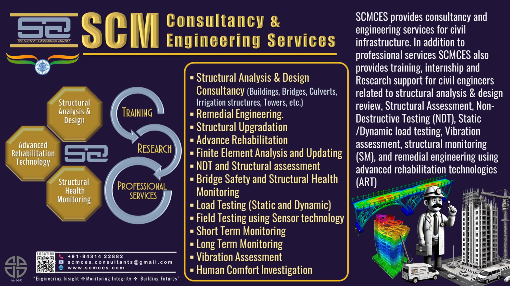

Technical Notes & Blogs
Short, practical reading for civil/structural engineers.
Q1: What is the primary purpose of a bridge load test?
The primary purpose is to demonstrate a bridge's capability to safely carry its design loads through physical verification. It is commonly used to resolve uncertainties about structural capacity, assess suspect performance such as excessive deflection, confirm safety after damage or deterioration, verify handing over of new constructions, and quality-assure repair works.
Q2: In what situations is bridge load testing typically required?
Typical situations include uncertainties about current as-built conditions, suspected performance issues (for example, creep deflection), unknown structural strength from analysis alone, proposed changes to heavier loads, assessment after bomb or fire damage, identified material defects or deterioration, handing over newly built bridges, and verification of repairs or strengthening work.
Q3: How is load usually applied during a bridge load test?
The most common method uses loaded trucks, either placed in static positions or driven across the bridge. This provides sufficient load to trigger the required structural response for measurement and analysis.
Q4: What is monitored during a bridge load test?
Deflections are the primary response measured using sensors installed on the structure. In addition, crack widths, material strains, vibration, and temperature are often monitored to obtain a comprehensive understanding of structural behavior.
Q5: What are the key planning steps before conducting a load test?
Key steps include stakeholder meetings to define objectives and acceptance criteria, site visits to understand access and logistics, preparation of a detailed instrumentation plan, visual inspections and non-destructive material testing, followed by execution of the load test with repeat trials for data validation before final reporting.
Q6: What is a Static Load Test, and when is it used?
A Static Load Test involves incrementally applying load, typically using stationary trucks, until a target load or signs of structural distress are observed. The target load usually represents the desired rating load with a safety margin. This method is logistically complex, costly, and generally suitable only for ductile and redundant structures, often conducted by government bodies or research institutions.
Q7: How does a Dynamic Load Test differ from a Static Load Test?
A Dynamic Load Test uses moving loads at different speeds instead of stationary loads. It evaluates the influence of dynamic effects such as vibration and impact on the bridge response and is often carried out to supplement or validate static load test results.
Q8: What is a Semi-Static Load Test and what are its advantages?
A Semi-Static Load Test is a hybrid approach in which a truck crosses the bridge at a very low speed. It is widely adopted due to lower cost, minimal traffic disruption, and its non-destructive nature. Test measurements are used to calibrate analytical models, from which load-carrying capacity is derived, making it suitable for both research and consultancy applications.
Q9: What is the goal of a Diagnostic (Semi-Static) Load Test?
The objective is to determine a safe load limit indirectly. Loads at or below rating levels are applied, and the measured responses are used to calibrate a structural model. The final load rating is then computed from the validated analytical model rather than directly from the test data.
Q10: Why is visual inspection important during the load testing process?
Visual inspections are carried out before, during, and after testing to document existing defects and to identify any new cracks or distress caused by applied loads. This provides critical visual evidence to support the interpretation of measured structural behavior.
YouTube Channel
Key Projects.
